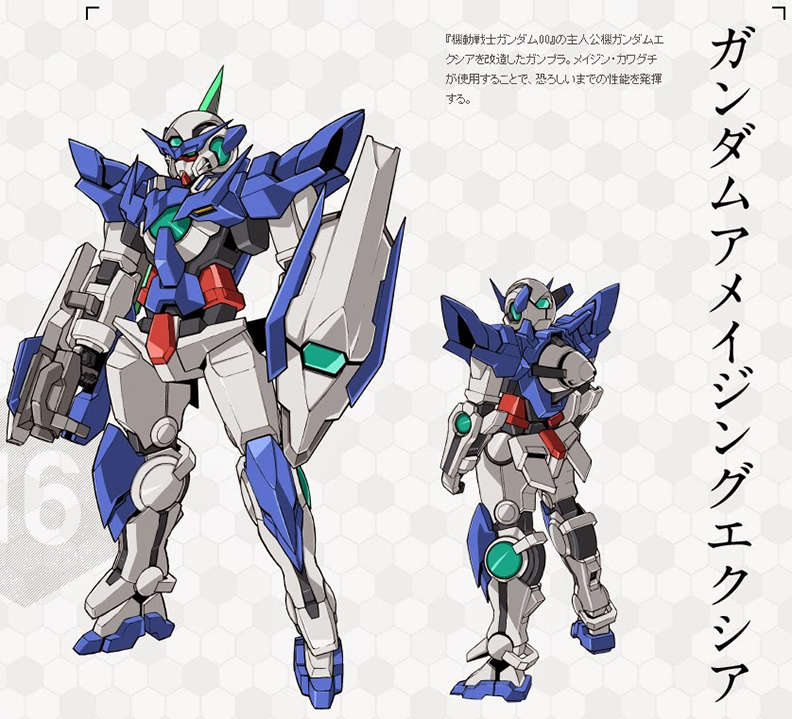

Home | Exia Gundam | Unicorn Gundam | Strike Gundam | Barbatos Gundam
The GN-001 Gundam Exia (aka Exia, Gundam Seven Swords), is the close combat Gundam-type mobile suit featured in both seasons of Mobile Suit Gundam 00. The unit is piloted by Setsuna F. Seiei.
Click Here for more Information